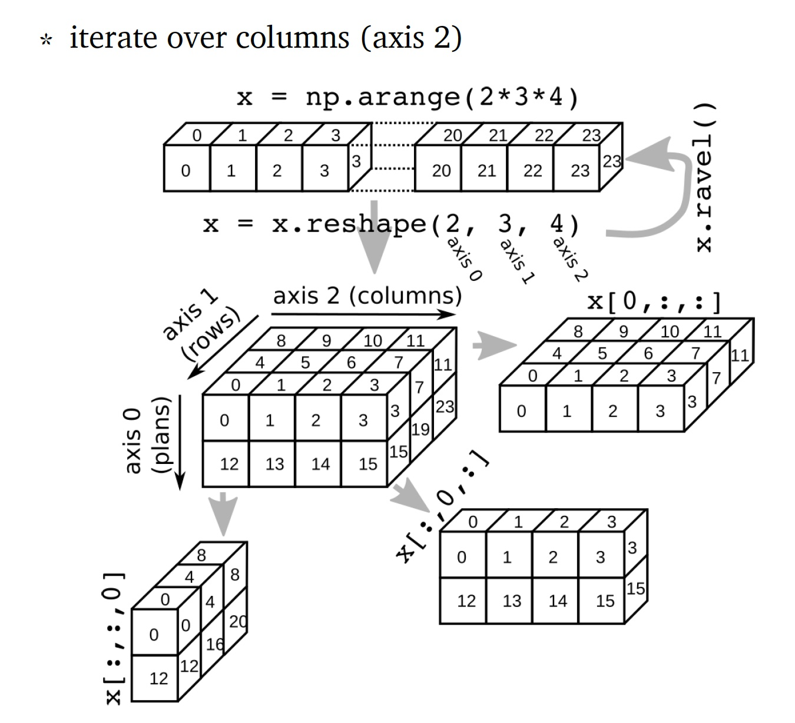

1. Python, una introducción#
1.1. Importar librerías#
A continuación se realiza un import genérico del módulo math:
import math
math.sqrt(25)
5.0
Si se desea importar una función específica, se declara luego de import
# importar una función
from math import sqrt
sqrt(25) # no se requiere tener una referencia al módulo
5.0
Cuando se requiere varias funciones de un módulo se declaran las funciones separadas por comas luego de import
# importar multiples funciones en una llamada
from math import cos, floor
Para importar todas las funciones de un modulo (generalmente no se recomienda), se usa *. En el siguiente ejemplo (comentado) se importan todas las funciones del módulo os.
# from os import *
Se puede definir alias (nombres preferidos) para las librerías. Sin embargo, por convención se han definido alias
# Definir un alias
import numpy as np
# mostrar todas las funciones del módulo 'math'
content = dir(math)
1.2. Operaciones básicas#
Números:
10 + 4 # suma (salida: 14)
14
10 - 4 # resta (salida 6)
6
10 * 4 # multiplicacion (salida 40)
40
10 ** 4 # exponente (salida 10000)
10000
10 / float(4) # divide (salida 2.5)
2.5
5 % 4 # modulo (salida 1) - también conocido como el resto
1
10 / 4 # division común (salida 2.5)
2.5
5 // 2 # division piso (salida 2)
2
Operaciones booleanas
# comparaciones (salida True)
5 > 3
5 >= 3
5 != 3
5 == 5
# operaciones booleanas (salida True)
5 > 3 and 6 > 3
5 > 3 or 5 < 3
not False
False or not False and True # orden de evaluación: not, and, or
True
1.3. Tipos de datos#
Determinar el tipo de objeto:
type(2) # salida 'int'
type(2.0) # salida 'float'
type('two') # salida 'str'
type(True) # salida 'bool'
type(None) # salida 'NoneType'
NoneType
Revisar si el objeto es de un tipo específico:
isinstance(2.0, int) # salida False
isinstance(2.0, (int, float)) # salida True
True
Convertir el objeto a un tipo epecífico:
float(2)
int(2.9)
str(2.9)
'2.9'
cero, None, y contenedores vacíos se convierten en False
bool(0)
bool(None)
bool('') # string vacío
bool([]) # list vacía
bool({}) # dictionary vacío
False
Contenedores no vacíos y distintos de cero se convierten en True
bool(2)
bool('two')
bool([2])
True
Contenido tomado de []
Listas (
list): estructuras flexibles que permiten agrupar objetos de cualquier tipo, incluso mezclados. Son mutables, lo que significa que pueden modificarse después de ser creadas. Se usan comúnmente para almacenar colecciones ordenadas de elementos.
üìå Ejemplo:["manzana", 3, True]Tuplas (
tuple): estructuras similares a las listas, pero inmutables (no se pueden modificar una vez creadas). Se utilizan cuando se quiere agrupar datos de diferentes tipos que no deben cambiar, como coordenadas o registros fijos.
üìå Ejemplo:(37.5, "Latitud", True)Arrays (
numpy.array): estructuras optimizadas para almacenar y operar sobre datos numéricos homogéneos. Son más eficientes que las listas para cálculos matemáticos y científicos. Aunque existen objetos comomatrix, la mayoría de funciones de NumPy y bibliotecas científicas prefieren losarrays.
üìå Ejemplo:np.array([1.5, 2.3, 3.1])Diccionarios (
dict): estructuras que almacenan pares clave–valor. Son ideales para representar datos estructurados o asociaciones, como atributos de una persona o propiedades de un objeto.
üìå Ejemplo:{"nombre": "Ana", "edad": 30}DataFrames (
pandas.DataFrame): estructuras tabulares que combinan la funcionalidad de arrays y diccionarios. Son especialmente útiles para análisis estadístico y científico, ya que permiten manipular, filtrar y resumir grandes volúmenes de datos con etiquetas.
üìå Ejemplo: tabla con columnasnombre,edad, yingreso.
List[]
Estructuras flexibles que permiten agrupar objetos de cualquier tipo, incluso mezclados. Son mutables, lo que significa que pueden modificarse después de ser creadas. Se usan comúnmente para almacenar colecciones ordenadas de elementos.
miLista = ["abc","def","hgoj"]
miLista.append("klm")
miLista
['abc', 'def', 'hgoj', 'klm']
miLista2 = [1,2,3]
miLista3 = [4,5,6]
miLista2 +miLista3
[1, 2, 3, 4, 5, 6]
Tuple()
Agrupa diferentes cosas. Las tuplas son inmutables, no pueden cambiar luego de crearse.
import numpy as np
miTupla = ('abc', np.arange(0,3,0.2), 2.5)
miTupla[2]
2.5
Array[]
Vectores y matrices para manipulación numérica de datos. Se definen en numpy. Nota que los vectores y arrays de dimensión 1-d son diferentes: los vectores NO se pueden transponer. El operador “+” suma los elementos correspondientes, el método .dot nos sirve para multiplicar dos arrays.
miArray2 = np.array(miLista2)
miArray3 = np.array(miLista3)
miArray2+miArray3
array([5, 7, 9])
miArray2.dot(miArray3)
32
Diccionarios{}
Los diccionarios son colecciones de contenido no ordenado (key/value), donde el contenido se asigna como dict['key']. Los diccionarios se crean con el comando dict o usando llaves {...}:
miDict = dict(uno = 1, dos = 2, info ='algo de informacion')
miDict2 = {'diez':10, 'veinte':20, 'info':'mas informacion'}
miDict2['info']
'mas informacion'
miDict.keys()
dict_keys(['uno', 'dos', 'info'])
miDict2.get('veinte')
20
DataFrame
Estructura de datos optimizada para trabajar con datos estadísticos.
1.4. Indexación & Slicing#
Las reglas para acceder elementos individuales en listas, tuplas o arrays de numpy son:
#a[ini:fin] # items desde ini hasta fin-1
# a[ini:] # items desde ini hasta el resto del array
# a[:fin] # items desde el inicio hasta el final -1
# a[:] # todo el array`
Se puede usar también step con cualquiera de las anteriores:
a[ini:fin:step] #empieza en ini hasta fin-1 separados por step
El punto clave a recordar es que la indexación empieza en 0, NO en 1; y que :fin representa el primer valor que NO es seleccionado.
Los índices también pueden ser negativos (ini o fin) que indica que se cuenta desde el final del array y no desde el principio
#a[-1] #ultimo ítem del array
#a[-2:] #dos ultimos ítems del array
#a[:-2] #todo excepto los dos últimos ítems`
También a[:5] devuelve los 5 primeros elementos, y a[-5:] los últimos.
{kind=link}
Practica la indexación con el siguiente array:
a = [5,4,3,6,8,62,1,2,3,6,8,9]
a[-1:]
[9]
a[-2:]
[8, 9]
a[:-2]
[5, 4, 3, 6, 8, 62, 1, 2, 3, 6]
a[2:12:2]
[3, 8, 1, 3, 8]
len(a)
12
1.5. Vectores y Arrays#
numpy es el módulo de python que hace eficiente el trabajo con números. Comúnmente se importa como np:
import numpy as np
Podemos crear arrays a partir de listas:
dat1 = [1,2,3,4,5] #lista
arr1 = np.array(dat1) #array de 1 dimensión
dat2 = [range(1,4),range(1,4)]# lista de listas
arr2 = np.array(dat2) # array 2D
arr2.tolist() # convertimos el array a una lista nuevamente
[[1, 2, 3], [1, 2, 3]]
Para examinar algunos elementos del array, tenemos:
arr1.dtype # float64
arr2.ndim # 2
arr2.shape # (2, 4) - axis 0 es filas, axis 1 es columnas
arr2.size # 8 - número total de elementos
len(arr2) # 2 - tamaño de la primera dimensión (o `axis`)
2
1.5.1. Creación de arrays especiales#
np.zeros: genera ceros, solo se necesita un input. Si se necesita una matriz de ceros debe ser una tupla con el numero de filas y columnas.
np.ones: genera unos
np.random.randn: genera números con distribución normal estándar
np.arange: genera un rango de números. Los parámetros pueden ser
start,endysteppingInterval. Nota que se excluye el valor final. Devuelve un array.np.linspace: genera valores espaciados en forma lineal
np.array: genera un array a partir de datos numéricos
import numpy as np
np.zeros(3)
array([0., 0., 0.])
np.zeros((3,2))
array([[0., 0.],
[0., 0.],
[0., 0.]])
np.ones: genera unos
np.random.randn: genera números con distribución normal estándar
np.random.randn(10)
array([ 0.78238334, -0.45499092, -0.40082612, -0.11349862, -1.36644996,
1.31624714, 2.75666 , 0.73045889, -1.19550423, -1.33151102])
np.arange: genera un rango de números. Los parámetros pueden ser
start,endysteppingInterval. Nota que se excluye el valor final.
np.arange(3)
array([0, 1, 2])
np.arange(0,3,0.5)
array([0. , 0.5, 1. , 1.5, 2. , 2.5])
xLow = np.arange(0,3,0.5)
xHigh = np.arange(3,5,0.5)
xLow
array([0. , 0.5, 1. , 1.5, 2. , 2.5])
xHigh
array([3. , 3.5, 4. , 4.5])
np.linspace: genera valores espaciados en forma lineal
np.linspace(0,10,6)
array([ 0., 2., 4., 6., 8., 10.])
np.array: genera un array a partir de datos numéricos
np.array([[1,2],[3,4]])
array([[1, 2],
[3, 4]])
Se debe resaltar unos tips que son peculiares de python
Las matrices son listas de listas, de modo que el primer elemento de una matriz te da la primera fila:
Amat = np.array([[1,2],[3,4]])
Amat[0]
array([1, 2])
Un vector no es lo mismo que una matriz de dimensión 1. Por este motivo, los vectores no se pueden transponer pero si las matrices
x = np.arange(3)
Amat = np.array([[1,2],[3,4]])
x.T == x
array([ True, True, True])
Amat.T == Amat
array([[ True, False],
[False, True]])
1.5.2. Reshape#
arr = np.arange(10,dtype = float).reshape((2,5))
print(arr.shape)
print(arr.reshape(5,2))
(2, 5)
[[0. 1.]
[2. 3.]
[4. 5.]
[6. 7.]
[8. 9.]]
Agregamos un eje (axis). np.newaxis se usa para aumentar la dimensión de la matriz existente en una dimensión más, cuando se usa una vez.
a = np.array([0,1])
print(a.shape)
print("-----")
a_col = a[:,np.newaxis]
print(a_col)
print(a_col.shape)
(2,)
-----
[[0]
[1]]
(2, 1)
Obtenemos la transpuesta
print(a_col.T)
[[0 1]]
Flatten: siempre devuelve una copia plana de la matriz original:
a_col.flatten()
array([0, 1])
1.5.3. Resumen sobre eje (axis), reshape, flatten y selección#
Numpy internals: por defecto, Numpy usa la convención C, es decir, lenguaje de fila principal: la matriz se almacena por filas ([]).
{kind=link}
x = np.arange(2*3*4)
print(x)
[ 0 1 2 3 4 5 6 7 8 9 10 11 12 13 14 15 16 17 18 19 20 21 22 23]
Hacemos un reshape para convertir x en una matriz 3D
x = x.reshape(2,3,4)
print(x)
[[[ 0 1 2 3]
[ 4 5 6 7]
[ 8 9 10 11]]
[[12 13 14 15]
[16 17 18 19]
[20 21 22 23]]]
Para seleccionar el primer plano:
print(x[0,:,:])
[[ 0 1 2 3]
[ 4 5 6 7]
[ 8 9 10 11]]
Para seleccionar las primeras filas:
print(x[:,0,:])
[[ 0 1 2 3]
[12 13 14 15]]
Para seleccionar las primeas columnas:
print(x[:,:,0])
[[ 0 4 8]
[12 16 20]]
Veamos ahora un ejemplo simple con una matriz 2D
Obtenemos la segunda línea y la tercera columna:
arr = np.arange(10, dtype = float).reshape((2,5))
print(arr)
[[0. 1. 2. 3. 4.]
[5. 6. 7. 8. 9.]]
Aplicamos ravel:
print(x.ravel())
[ 0 1 2 3 4 5 6 7 8 9 10 11 12 13 14 15 16 17 18 19 20 21 22 23]
1.6. Conversiones entre tipos de datos#
En ocasiones necesitamos transformar datos entre tipos. Las funciones int, float y str nos ayudan en esta tarea. Veamos unos ejemplos
print(3.14, int(3.14))
3.14 3
print(3.9999, int(3.9999)) # No se redondea al enterno más próximo
3.9999 3
print(3.0, int(3.0))
3.0 3
print(9, float(9))
9 9.0
print("2345",int("2345")) # El string se convierte en int
2345 2345
#print(int("23covid"))
print(type("23.45"))
<class 'str'>
Una tarea común es concatenar strings con valores, veamos
val = 5+3
#print("El valor es: " + val)
print("El valor es: " , val) #Solucion 1
El valor es: 8
print("El valor es: " + str(val)) #Solucion 1
El valor es: 8
También se tiene operadores aumentados como a+=b, sus operaciones equivalentes se muestran a continuación:
a+=b |
a = a+b |
a-=b |
a = a-b |
a*=b |
a = a*b |
a/=b |
a = a/b |
a**=b |
a = a**b |
a%=b |
a = a%b |
1.6.1. Operadores de comparación#
< |
Mayor que |
> |
Menor que |
<= |
Menor o igual a |
>= |
Mayor o igual a |
== |
Igual a |
!= |
No es igual a |
Los números de diferentes tipos (int, float, str, etc.) se convierten a un tipo común para ser comparados. De lo contrario se consideran diferentes. Ejemplos:
a = 2 # Int
b = 1.99 #float
c = '2' # str
print(a>b)
True
print(a>b and a!=c)
True
print(a>b or a ==b)
True
1.6.2. Condicionales#
IF
if condición: bloque
Ejecuta un bloque de sentencias (que deben ser indentadas) si la condición es cierta. Si la condición es falsa, el bloque no se ejecuta. Un condicional if puede ser seguido de varios elif (que significa “else if”)
elif condición: bloque
también se usa else
else condición: bloque
que se puede usar un bloque para cuando ninguna de las anteriores elif es verdadera. Definamos una función simple para evaluar condicionales
def signo_de_a(a):
if(a < 0.0):
signo = 'negativo'
elif(a>0.0):
signo = 'positivo'
else:
signo = 'zero'
return(signo)
a = 1.5
print('El signo de a es: '+ signo_de_a(a))
El signo de a es: positivo
1.6.3. Bucles#
while
while condición: bloque
Ejecuta el bloque de sentencias (intentadas) si la condición es cierta. Después de la ejecución del bloque, la condición se evalúa nuevamente. Si es verdadera, se vuelve a ejecutar. Continúa así hasta que la condición sea falsa.
nMax = 5
n = 1
a = [] # creamos una lista vacía
while n < nMax:
a.append(1.0/n) # agregamos un elemento a la lista
n += 1
print(a)
[1.0, 0.5, 0.3333333333333333, 0.25]
1.7. FOR#
Esta sentencia necesita un objetivo y una secuencia (usualmente una lista) sobre la que el objetivo itera. Su forma es:
for objetivo in secuencia: bloque
Es posible añadir un else depués del for de ser necesario (aplica también para while)
nMax = 5
a = []
for n in range(1,nMax):
a.append(1.0/n)
print(a)
[1.0, 0.5, 0.3333333333333333, 0.25]
Aquí n es el objetivo y la lista es [1,2,...,(nMax-1)], que se crea con la función arange. Veamos un ejemplo más completo que busca un nombre en una lista:
lista = ["Julio","Jammie","Gina","David"]
name = "Tito"#eval(input("Escriba un nombre: ")) #Codigo para ingresar datos
for i in range(len(lista)):
if lista[i] == name:
print( name, 'es número', i+1, 'en la lista')
break
else:
print( name, 'no está en la lista')
Tito no está en la lista
### CONTINUE
Esta sentencia, continue, permite saltarse una porción de código en un loop iterativo. Si el intérprete encuentra un continue regresa al principio del loop sin ejecutar las líneas debajo de continue.
El siguiente ejemplo compila una lista de todos los números entre el 1 y el 99 que son divisibles para 7.
x = [] # creamos una lista vacía
for i in range(1,100):
if i%7!=0: continue # Si no es divisible para 7, no se ejecuta el resto
x.append(i) # agregamos i a la lista
print(x)
[7, 14, 21, 28, 35, 42, 49, 56, 63, 70, 77, 84, 91, 98]
1.8. Programas en python#
1.8.1. Funciones, módulos y paquetes#
Función Una función se define por la palabra clave
def. Devuelve un objeto con la sentenciareturnque generalmente va al final.Módulos Es un archivo con la extensión
.py. Los módulos pueden contener funciones y definiciones de variables.Paquetes: Un paquete es una carpeta que contiene varios módulos y debe contener un archivo llamado
__init__.py. Por ejemplonumpyes un paquete de python.
Funciones
'''Demostración de una función de python
author: thomas haslwanter, date: May-2015
'''
# Importamos los paquetes
import numpy as np
def incomeAndExpenses(data):
'''Encuentre la suma de valores positivos, y la suma de valores negativos.'''
income = np.sum(data[data>0])
expenses = np.sum(data[data<0])
return(income,expenses)
testData = np.array([-5,12, 3, -6, -4, 8])
(myIncome,myExpenses) = incomeAndExpenses(testData)
print('Has ganado USD {0:5.2f} y gastado USD {1:5.2f}'.format(myIncome,-myExpenses))
Has ganado USD 23.00 y gastado USD 15.00
El número de parámetros en la definición de una función puede ser arbitrario. Por ejemplo, en la definición
def func(x1,x2,*x3)
x1 y x2 son parámetros usuales, también llamados parámetros posicionales, pero x3 es una tupla de longitud arbitraria que contiene parámetros adicionales. Si llamamos a la función
func(a,b,c,d,e)
entonces a corresponde a x1, b a x2 pero c,d,e corresponde a x3.
1.8.2. Lambda#
Si la función tiene la forma de una expresión, se puede definir con la sentencia lambda.
func_name = lambda param1, param2, ...: expresión
No se permiten varias expresiones. Un ejemplo:
c = lambda x,y: x**2 + y**2
print(c(3,4))
25
1.9. Tips de python#
Pep8 es un estándar de buenas prácticas de programación en Python: https://peps.python.org/pep-0008/. A continuación, aldunos elementos básicos:
Convenciones estándar
Se debe documentar cada función debajo de su definición
Los paquetes se deben importar con sus nombres comunes:
import numpy as npimport matplotlib.pyplot as pltimport scipy as spimport pandas as pdimport seaborn as sns
Para obtener el directorio de trabajo actual usa
os.path.abspath(os.curdir). Para cambiar directorios usaos.chdir(...)Todo en python es un objeto, para saber el tipo de objeto con el que lideamos se usa
type(obj)Conoce lo fundamental: listas, tuplas, directorios, numpy arrays y pandas DatFrames.
Para temas de codificación en español puedes usar
# -*- coding: utf-8 -*-al principio del código.